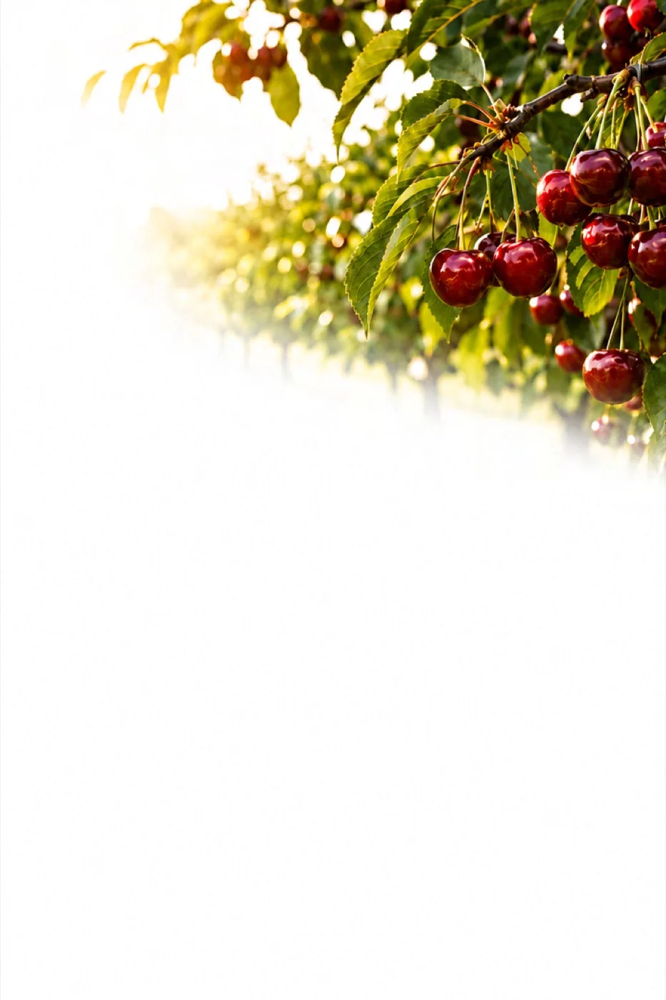

Where are we now?
Establish the crop, stage, production target and current soil, plant, water and produce evidence.
Hybrid-Ag uses the available tests and crop history to develop a nutrition plan for your paddock or block. Prescription blends are considered alongside the timing and practicalities of application, with recommendations reviewed as the season progresses.
Recommendations take account of the crop, soil conditions, growth stage and production target, including what is practical on the farm.
New results and field observations help the team review the plan through the season.
Establish the crop, stage, production target and current soil, plant, water and produce evidence.
Compare changes in test results with seasonal conditions, crop history, previous applications and the crop’s response.
Prioritise the next practical action, separate it from later work and define what should be checked again.
A test result needs context. Soil conditions, crop stage, water and previous crop performance all help the team interpret it before recommending inputs.
Mineral balance, structure, Carbon, biology, depth and the root zone.
Leaf, tissue and differential sap results considered alongside crop stage, growth, crop load and Nutrient demand.
Water quality, irrigation, fertigation, foliar conditions, equipment and practical application constraints.
Yield, grade, quality, Nutrient removals and the specification required by the customer or processor.
The plan sets out the recommendations and the reasons for them, with opportunities to review the crop’s response.
Representative soil testing establishes the starting position. Where testing identifies a soil requirement, Hybrid-Ag can calculate the total elemental requirement in kilograms per hectare and use that calculation to help develop a prescription for the nominated area.
Explore prescription blendsCrop stage, plant results, water and growing conditions guide each recommendation. Product, form, placement and timing are selected for the identified requirement.
Explore testing and interpretationRepeat samples, crop observations and harvest results help assess the response. The team reviews the findings and adjusts its recommendations where needed.
See differential sap analysis
The recommendations include the sampling details and explain any follow-up needed. The format depends on the work required.
Testing and recommendations are adapted to the crop’s growth, the production system and market requirements.
 BlocksHorticultureMarketable fruit, pack-out, grade, condition and shelf life.
BlocksHorticultureMarketable fruit, pack-out, grade, condition and shelf life.
 Paddocks or blocksSmall CropMarketable yield, specification, uniformity, timing and quality.
Paddocks or blocksSmall CropMarketable yield, specification, uniformity, timing and quality.
 PaddocksBroadacre & PastureYield, grain quality, Nutrient efficiency and rotation position.
PaddocksBroadacre & PastureYield, grain quality, Nutrient efficiency and rotation position.
 BlocksViticultureCrop and canopy, maturity, specification, condition and harvest timing.
BlocksViticultureCrop and canopy, maturity, specification, condition and harvest timing.

Our most developed crop program covers post-harvest, dormancy, flowering, set, fruit development and harvest. It uses block information to guide decisions at each stage.

The Apple Playbook includes a sample program for Pink Lady apples. Use it as a discussion point with the team; products, rates and timing need to suit the orchard.
Crop observations and follow-up tests help the team assess the recommendations and decide whether anything needs to change.
Review the current results and crop conditions.
Decide which requirements to address.
Review crop response and repeat the relevant tests.
Review the results and adjust the next plan.